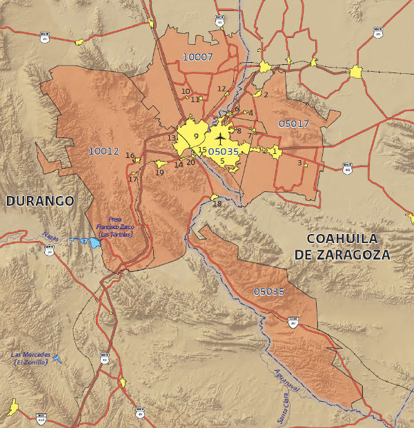

METROPOLI: “Ciudad principal, cabeza de la provincia o Estado”
La METROPOLIZACIÓN es el proceso de crear METROPOLIS.
La METROPOLIS es el resultado de la METROPOLIZACIÓN.
Entre 2000 y 2010 el número de zonas metropolitanas en México aumentó de 55 a 59 y su población creció 23.8%, al pasar de 51.5 a 63.8 millones. Para 2020 y 2030 se proyecta que la población que habita en zonas metropolitanas llegue a 72.4 y 78 millones, respectivamente. Actualmente en nuestro país existen 59 zonas metropolitanas que abarcan 367 municipios. La Zona Metropolitana de la Laguna, conformada por los Municipios de Torreón y Matamoros en el Edo. De Coahuila, Gómez Palacio y ciudad Lerdo en el Edo. de Durango se enlista en esas 59 zonas metropolitanas que se contabilizan en México. En promedio cada zona metropolitana está integrada por 6.4 municipios, la zona metropolitana que más municipios abarca es la del Valle de México con 76 municipios.
El país tiende a la concentración en ciudades y Municipios a través de conurbaciones y Zonas Metropolitanas, que por causas fortuitas o por la ocupación expansiva de los territorios se ha ido dando en las últimas décadas.
¿Cómo lograr que estas aglomeraciones urbanas se beneficien de las fortalezas de su cercanía?
El Programa Nacional de Desarrollo Urbano observa cuales son las principales debilidades que presentan las actuales ZONAS METROPOLITANAS en el país:
- La carencia de un marco legal adecuado para la gestión de las zonas conurbadas y metrópolis ha provocado acciones desarticuladas e incluso contradictorias en temas como: planeación urbana; dotación de equipamiento, homologación de normativa administrativa, hacendaria y de inversión; movilidad, y prevención y atención de riesgos.
- La escasa coordinación entre gobiernos municipales en combinación con el plazo tan corto de gestión con el que cuentan.
- La falta de capacitación y continuidad de sus cuadros administrativos, así como la carencia de herramientas técnicas de planeación, incentiva la politización de la toma de decisiones y promueve la existencia proyectos sin visión de largo plazo ni planificación del territorio y de las ciudades
- La desarticulación del desarrollo urbano y la dinámica económica, y social de la población que habita en las ciudades ha generado que esta última desarrolle hábitos de consumo, movilidad, vivienda y esparcimiento no sustentables.
- Los contaminantes atmosféricos provenientes de automóviles -principal medio de movilidad promovido en el actual modelo de desarrollo urbano- son una de las causas de enfermedades respiratorias crónicas.
Para una buena planeación de la ciudad se debe considerar una variedad de definiciones diferentes y desde diversos enfoques, pensando de manera integral sobre cómo toda el área metropolitana puede volverse más compacta promoviendo el bienestar de los residentes que la habitan. Las ciudades son los motores del crecimiento. Es en éstas donde muchos realizan sus sueños de una vida mejor. Incluso cuando a veces esto no se logra, muchas personas abandonan las zonas rurales y acuden a las urbes por la promesa de un mejor futuro.
Con el lema «Cambiar las ciudades para construir oportunidades», ONU-Hábitat (año 2012) destaca la necesidad de planificar mejor nuestras metrópolis porque el crecimiento improvisado conduce a un desarrollo caótico y a una desequilibrada expansión urbana. Por el contrario, cuando están bien ideadas, las ciudades ofrecen oportunidades tanto a sus actuales como a sus futuros residentes.
Fuentes de Información
- PROGRAMA Nacional de Desarrollo Urbano 2014-2018.
- DELIMITACION DE ZONAS METROPOLITANAS EN MEXICO 2010
- ONU-HABITAT. Documento “Estado de las ciudades 2012”.
Hacer de las áreas conurbadas y las zonas metropolitanas unidades territoriales funcionales que estructuren el sistema urbano(*) Estrategia 1.6 del PNDU